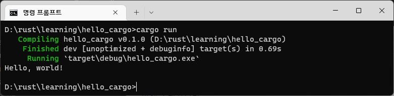

러스트 프로젝트
프로젝트 생성하기
cargo를 이용하여 러스트 프로젝트를 생성하여 프로그램을 작성할 수 있습니다.
cargo new hello_cargo
다음과 같이 cargo를 이용하여 프로젝트 폴더가 생성된 것을 확인합니다.

목록을 확인해 봅시다.
D:\rust\learning\hello_cargo 디렉터리
[.] [..] .gitignore Cargo.toml [src]
2개 파일 188 바이트
3개 디렉터리 1,142,450,814,976 바이트 남음
프로젝트 실행을 위한 여러가지 폴더와 파일들이 같이 생성된 것을 확인합니다. 소스코드는 src 폴더 안에 존재합니다.
프로젝트 컴파일 하기
현재 프로젝트 폴더 안에서 cargo run 명령을 실행합니다.

D:\rust\learning\hello_cargo>cargo run
Compiling hello_cargo v0.1.0 (D:\rust\learning\hello_cargo)
Finished dev [unoptimized + debuginfo] target(s) in 0.69s
Running `target\debug\hello_cargo.exe`
Hello, world!
위와 같이 cargo는 프로젝트안에 있는 러스트 파일을 컴파일 하고 실행결과도 같이 출력합니다.
컴파일 후에 폴더의 내용을 다시한번 확인해 보도록 합니다.
D:\rust\learning\hello_cargo 디렉터리
[.] [..] .gitignore Cargo.lock Cargo.toml [src]
[target]
3개 파일 343 바이트
4개 디렉터리 1,142,449,045,504 바이트 남음
프로젝트를 컴파일 하게 되면 몇개의 파일과 폴더가 더 생성이 됩니다. 컴파일된 실행 파일은 /target/debug 폴더 안에 exe 파일이 존재하는 것을 확인 할 수 있습니다.
D:\rust\learning\hello_cargo\target\debug 디렉터리
[.] [..] .cargo-lock [.fingerprint]
[build] [deps] [examples] hello_cargo.d
hello_cargo.exe hello_cargo.pdb [incremental]
4개 파일 1,550,436 바이트
7개 디렉터리 1,142,449,045,504 바이트 남음